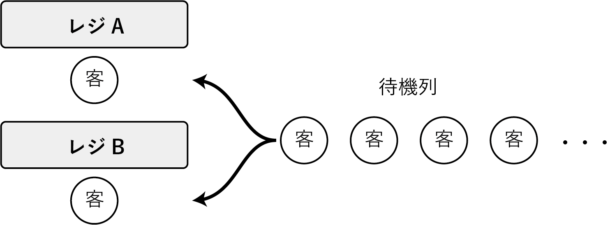
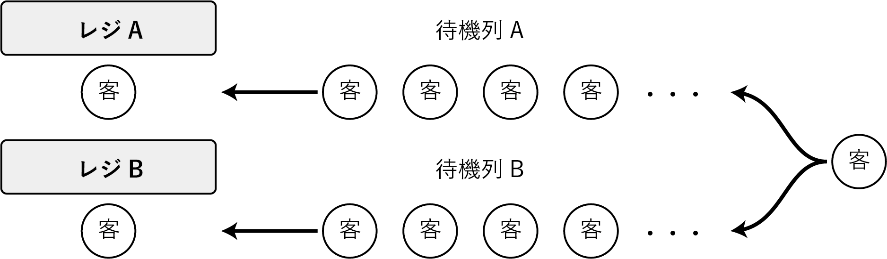

例題1
実習課題
あるスーパーマーケットでは、混雑時のレジ待ち時間が長いという課題を抱えている。 これを解決するため、次のようなシミュレーションを行った。 ただし、混雑時の客の到着間隔とレジのサービス時間は、次表の範囲の乱数を用いている。
| 下限値 | 上限値 | |
|---|---|---|
| 客の到着間隔 | 2 | 5 |
| サービス時間 | 4 | 11 |
実習の手順
まず、配布されたワークシートを用いて、手書きで表を埋めてみましょう。
次に、上記の実習ファイル（スプレッドシート）をダウンロードし、表を完成させてみましょう。
あるスーパーマーケットでは、混雑時のレジ待ち時間が長いという課題を抱えている。 これを解決するため、次のようなシミュレーションを行った。 ただし、混雑時の客の到着間隔とレジのサービス時間は、次表の範囲の乱数を用いている。
| 下限値 | 上限値 | |
|---|---|---|
| 客の到着間隔 | 2 | 5 |
| サービス時間 | 4 | 11 |
まず、配布されたワークシートを用いて、手書きで表を埋めてみましょう。
次に、上記の実習ファイル（スプレッドシート）をダウンロードし、表を完成させてみましょう。
まずは、レジ１台の場合をシミュレーションしてみましょう。
表1-1は、最初の20人の客(客 1 〜 客 20)の待ち行列の表である。 表の青背景のセルに適する数式を入力し下方向にオートフィルすることにより、表を完成させなさい。
表1-2は、表1-1の結果から、客の待ち状況をシミュレーションした結果である。 青背景のセルに数式を入力し、右方向と下方向にオートフィルすることにより、表を完成させなさい。 ただし、レジのサービスを受けている時間を「S」，待ち時間を「W」で示しなさい。
表1-3は、表1-1と表1-2の結果を集計したものである。青背景のセルに数式を入力し、表を完成させなさい。
到着時刻〜サービス開始時刻のあいだは「W」，サービス開始時刻〜サービス終了時刻のあいだは「S」を表示する。
数式を使ってで文字列を表示する場合はダブルクォート"..."でくくる。
「W」を表示するには"W"，「S」を表示するには"S"，空欄（空白文字）を表示する場合は""とする。
たとえば、IF関数の中では、条件式を満たしたとき「W」、満たさないときは空欄としたい場合は次のように書く。
=IF(条件式, "W", "")条件式１を満たしたとき「W」、そうでない場合で条件式２を満たした場合は「W」，そうでない場合は空欄としたい場合は、IF関数をネストして次のように書く。
=IF(条件式１, "W", IF(条件式２, "S", ""))または、IFS関数を用いると、ネストせずに書ける。
=IFS(条件式１, "W", 条件式２, "S", true, "")IF関数やIFS関数の条件式は、比較演算子は１つしか使えないので、「到着時刻以降」かつ「サービス開始時刻」という条件を指定する場合は、AND関数を用いる。
=AND(条件式１, 条件式２)到着時刻〜サービス開始時刻のあいだは「W」，サービス開始時刻〜サービス終了時刻のあいだは「S」を表示する。
IF関数をネストした場合の書き方は次の通り。
=IF(AND(到着時刻<=時刻, 時刻<サービス開始時刻), "W", IF(AND(サービス開始時刻<=時刻, 時刻<サービス終了時刻), "S", ""))IFS関数を用いた場合の書き方は次の通り。
=IFS(AND(到着時刻<=時刻, 時刻<サービス開始時刻), "W", AND(サービス開始時刻<=時刻, 時刻<サービス終了時刻), "S", true, "")次に、レジ を2台に増やし、待機列は1列の場合を考える。 先頭の客は、空いているレジへ移動する（両方空いている場合はレジA）。

表2-1は、最初の20人の客(客 1 〜 客 20)の待ち行列の表である。 表の青背景のセルに適する数式を入力し下方向にオートフィルすることにより、表を完成させなさい。
表2-2は、表2-1の結果から、客の待ち状況をシミュレーションした結果である。 青背景のセルに数式を入力し、右方向と下方向にオートフィルすることにより、表を完成させなさい。 ただし、レジのサービスを受けている時間を「S」，待ち時間を「W」で示しなさい。
表2-3は、表2-1と表2-2の結果を集計したものである。 青背景のセルに数式を入力し、表を完成させなさい。
次に、レジ 2台で各レジに待ち行列を作る場合を考える。 ただし、客はサービス中および待機中の客数が少ない列に並ぶ（同数の場合は列Aに並ぶ）。 また、一度待ち行列に並ぶと他方には移動しないものとする。次の①〜③に答えなさい。

表3-1は、最初の20人の客(客 1 〜 客 20)の待ち行列の表である。 表の青背景のセルに適する数式を入力し下方向にオートフィルすることにより、表を完成させなさい。
表3-2は、表3-1の結果から、客の待ち状況をシミュレーションした結果である。 青背景のセルに数式を入力し、右方向と下方向にオートフィルすることにより、表を完成させなさい。 ただし、レジのサービスを受けている時間を「S」，待ち時間を「W」で示しなさい。
表3-3は、表3-1と表3-2の結果を集計したものである。 青背景のセルに数式を入力し、表を完成させなさい。